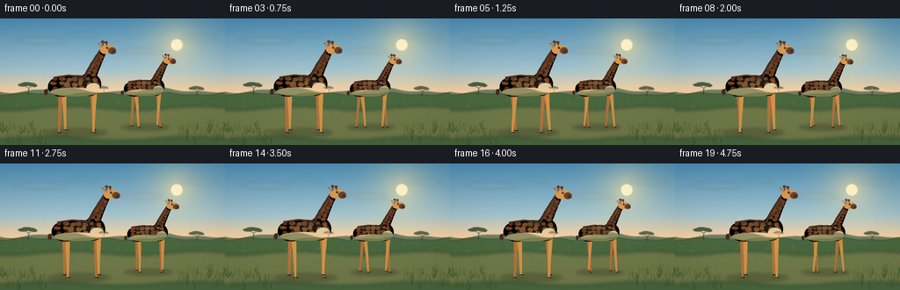
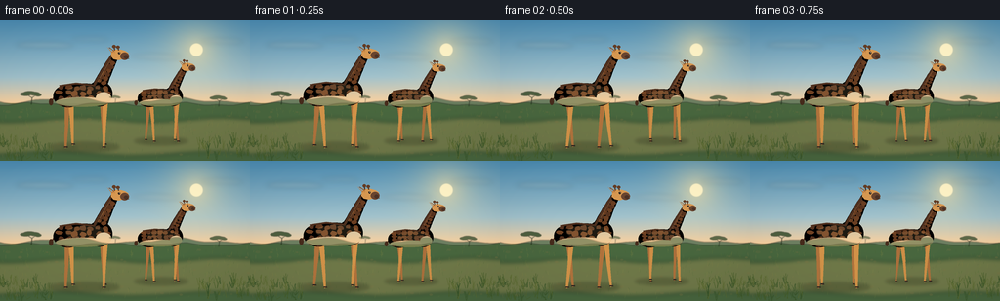
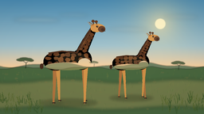
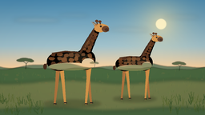
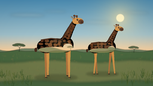

CODING AGENTS AS PIXEL WORLD MODELS
traex/DeepSeek-V4.1-Flash · instance_preservation_0011
点击播放 · 原生 RGB 像素
逐轮保存的候选
回放视频、检查图与代码变化。
每份候选均可单独播放。实际图片检查记录在下方工具轨迹中。
候选 01播放与检查图
点击播放 · 原生 RGB 像素


展开代码变化
--- 上一保存版本
+++ 本次保存版本
@@ -0,0 +1,620 @@
+from pathlib import Path
+import math
+import random
+
+import numpy as np
+from PIL import Image, ImageChops, ImageDraw, ImageFilter
+
+import artifact_io
+
+
+W, H = 256, 144
+FRAMES = 20
+FPS = 4.0
+SS = 4
+RW, RH = W * SS, H * SS
+ROOT = Path(__file__).resolve().parent
+
+
+def px(value):
+ return value * SS
+
+
+def point(x, y):
+ return (px(x), px(y))
+
+
+def box(cx, cy, rx, ry):
+ return [px(cx - rx), px(cy - ry), px(cx + rx), px(cy + ry)]
+
+
+def rgba(color):
+ return color if len(color) == 4 else (*color, 255)
+
+
+def lerp(a, b, t):
+ return a + (b - a) * t
+
+
+def mix(c1, c2, t):
+ return tuple(round(lerp(a, b, t)) for a, b in zip(c1, c2))
+
+
+def make_background():
+ y, x = np.mgrid[0:RH, 0:RW]
+ horizon = 85.0
+ sky_t = np.clip(y / px(horizon), 0.0, 1.0)
+
+ top = np.array([76, 143, 183], dtype=np.float32)
+ middle = np.array([160, 194, 205], dtype=np.float32)
+ warm = np.array([249, 210, 160], dtype=np.float32)
+ low = np.clip(sky_t / 0.68, 0.0, 1.0)[..., None]
+ high = np.clip((sky_t - 0.68) / 0.32, 0.0, 1.0)[..., None]
+ sky = top * (1.0 - low) + middle * low
+ sky = sky * (1.0 - high) + warm * high
+
+ sun_x, sun_y = px(201), px(30)
+ dist = np.hypot(x - sun_x, y - sun_y)
+ glow = np.exp(-(dist / px(26)) ** 1.25) * 0.65
+ glow = glow[..., None]
+ sun_color = np.array([255, 231, 167], dtype=np.float32)
+ sky = sky * (1.0 - glow) + sun_color * glow
+ disc = np.clip((px(7.2) - dist) / px(1.2), 0.0, 1.0)[..., None]
+ sky = sky * (1.0 - disc) + np.array([255, 246, 202], dtype=np.float32) * disc
+
+ ground_t = np.clip((y - px(horizon)) / px(H - horizon), 0.0, 1.0)
+ ground = np.zeros((RH, RW, 3), dtype=np.float32)
+ near_top = np.array([185, 166, 104], dtype=np.float32)
+ near_bottom = np.array([69, 100, 43], dtype=np.float32)
+ ground[:] = near_top * (1.0 - ground_t[..., None]) + near_bottom * ground_t[..., None]
+
+ rng = np.random.default_rng(14)
+ coarse = rng.normal(0.0, 7.0, (36, 64)).astype(np.float32)
+ coarse = np.asarray(
+ Image.fromarray(coarse).resize((RW, RH), Image.Resampling.BICUBIC)
+ )
+ ground += coarse[..., None]
+ ground[:, :, 0] += 5.0 * np.sin(x / px(29.0))
+ ground[:, :, 1] += 4.0 * np.sin(x / px(37.0) + 1.3)
+
+ base = np.where((y < px(horizon))[..., None], sky, ground)
+ base = np.clip(base, 0, 255).astype(np.uint8)
+ image = Image.fromarray(base).convert("RGBA")
+ draw = ImageDraw.Draw(image, "RGBA")
+
+ # Soft cloud bands, placed above the distant hills.
+ clouds = Image.new("RGBA", (RW, RH), (0, 0, 0, 0))
+ cd = ImageDraw.Draw(clouds, "RGBA")
+ for cx, cy, rx, ry, alpha in [
+ (44, 25, 28, 2.4, 42),
+ (91, 19, 18, 1.7, 34),
+ (159, 37, 24, 2.2, 34),
+ (226, 21, 21, 1.9, 31),
+ ]:
+ cd.ellipse(box(cx, cy, rx, ry), fill=(255, 243, 219, alpha))
+ cd.ellipse(box(cx + rx * 0.55, cy + 0.8, rx * 0.58, ry * 0.8), fill=(255, 239, 211, alpha))
+ clouds = clouds.filter(ImageFilter.GaussianBlur(px(2.4)))
+ image.alpha_composite(clouds)
+
+ # Layered blue-green hills give the horizon depth without hiding the animals.
+ hills_far = Image.new("RGBA", (RW, RH), (0, 0, 0, 0))
+ hfd = ImageDraw.Draw(hills_far, "RGBA")
+ far_points = [(0, H)]
+ for i in range(65):
+ xx = i * 4
+ yy = 82.0 + 2.4 * math.sin(xx * 0.057 + 0.7) + 1.2 * math.sin(xx * 0.13)
+ far_points.append((xx, yy))
+ far_points.extend([(W, H)])
+ hfd.polygon([point(a, b) for a, b in far_points], fill=(94, 119, 91, 230))
+ hills_far = hills_far.filter(ImageFilter.GaussianBlur(px(0.55)))
+ image.alpha_composite(hills_far)
+
+ hills_near = Image.new("RGBA", (RW, RH), (0, 0, 0, 0))
+ hnd = ImageDraw.Draw(hills_near, "RGBA")
+ near_points = [(0, H)]
+ for i in range(65):
+ xx = i * 4
+ yy = 86.0 + 1.3 * math.sin(xx * 0.082 + 2.0) + 0.7 * math.sin(xx * 0.19)
+ near_points.append((xx, yy))
+ near_points.extend([(W, H)])
+ hnd.polygon([point(a, b) for a, b in near_points], fill=(70, 101, 61, 235))
+ hills_near = hills_near.filter(ImageFilter.GaussianBlur(px(0.45)))
+ image.alpha_composite(hills_near)
+
+ # A pale, worn trail crosses the field beneath the walk.
+ trail = Image.new("RGBA", (RW, RH), (0, 0, 0, 0))
+ td = ImageDraw.Draw(trail, "RGBA")
+ top_edge, bottom_edge = [], []
+ for i in range(33):
+ xx = i * 8
+ top_edge.append((xx, 102.0 + 2.3 * math.sin(xx * 0.043 + 1.2)))
+ bottom_edge.append((xx, 137.0 + 2.1 * math.sin(xx * 0.038 + 2.7)))
+ td.polygon(
+ [point(a, b) for a, b in top_edge] + [point(a, b) for a, b in reversed(bottom_edge)],
+ fill=(192, 160, 95, 80),
+ )
+ trail = trail.filter(ImageFilter.GaussianBlur(px(2.2)))
+ image.alpha_composite(trail)
+
+ detail = Image.new("RGBA", (RW, RH), (0, 0, 0, 0))
+ dd = ImageDraw.Draw(detail, "RGBA")
+ rng = random.Random(27)
+ for _ in range(230):
+ xx = rng.uniform(0, W)
+ yy = rng.uniform(88, 142)
+ length = rng.uniform(1.2, 4.0)
+ color = rng.choice(
+ [(80, 111, 53, 125), (111, 130, 66, 120), (145, 142, 78, 105), (63, 91, 45, 105)]
+ )
+ dd.line([point(xx, yy), point(xx + rng.uniform(-0.7, 0.7), yy - length)], fill=color, width=max(1, px(0.22)))
+ for _ in range(54):
+ xx = rng.uniform(0, W)
+ yy = rng.uniform(91, 139)
+ radius = rng.uniform(0.45, 1.45)
+ dd.ellipse(box(xx, yy, radius * 1.7, radius), fill=(126, 117, 69, rng.randint(35, 75)))
+ image.alpha_composite(detail)
+
+ # Flat-crowned acacias anchor the horizon.
+ trees = Image.new("RGBA", (RW, RH), (0, 0, 0, 0))
+ tree_draw = ImageDraw.Draw(trees, "RGBA")
+ for cx, base_y, scale, alpha in [(32, 86, 0.82, 215), (224, 88, 0.66, 195), (118, 84, 0.42, 145)]:
+ trunk_color = (51, 70, 42, alpha)
+ tree_draw.line(
+ [point(cx, base_y), point(cx + 1.2 * scale, base_y - 8.5 * scale)],
+ fill=trunk_color,
+ width=max(1, round(px(0.9 * scale))),
+ )
+ tree_draw.line(
+ [point(cx + 1.1 * scale, base_y - 7.7 * scale), point(cx - 5.0 * scale, base_y - 11.8 * scale)],
+ fill=trunk_color,
+ width=max(1, round(px(0.65 * scale))),
+ )
+ tree_draw.line(
+ [point(cx + 1.2 * scale, base_y - 8.2 * scale), point(cx + 7.0 * scale, base_y - 12.3 * scale)],
+ fill=trunk_color,
+ width=max(1, round(px(0.65 * scale))),
+ )
+ canopy_color = (50, 73, 42, alpha)
+ for off_x, off_y, rx, ry in [
+ (-7.0, -12.6, 6.8, 2.2),
+ (-2.0, -14.0, 7.8, 2.4),
+ (4.0, -13.2, 6.6, 2.1),
+ (8.5, -11.8, 4.0, 1.8),
+ ]:
+ tree_draw.ellipse(
+ box(cx + off_x * scale, base_y + off_y * scale, rx * scale, ry * scale),
+ fill=canopy_color,
+ )
+ trees = trees.filter(ImageFilter.GaussianBlur(px(0.35)))
+ image.alpha_composite(trees)
+
+ # Midground grass and flowers are kept away from the giraffe feet.
+ grass = Image.new("RGBA", (RW, RH), (0, 0, 0, 0))
+ gd = ImageDraw.Draw(grass, "RGBA")
+ rng = random.Random(91)
+ for _ in range(115):
+ xx = rng.uniform(0, W)
+ yy = rng.uniform(91, 124)
+ if 47 < xx < 207 and yy > 98:
+ continue
+ height = rng.uniform(1.2, 4.2)
+ gd.line(
+ [point(xx, yy), point(xx + rng.uniform(-1.1, 1.1), yy - height)],
+ fill=rng.choice([(73, 103, 48, 160), (98, 121, 56, 155), (139, 134, 67, 125)]),
+ width=max(1, px(0.22)),
+ )
+ image.alpha_composite(grass)
+ return image
+
+
+def bezier(p0, p1, p2, t):
+ u = 1.0 - t
+ return (
+ u * u * p0[0] + 2.0 * u * t * p1[0] + t * t * p2[0],
+ u * u * p0[1] + 2.0 * u * t * p1[1] + t * t * p2[1],
+ )
+
+
+def tube(draw, centers, widths, fill):
+ left, right = [], []
+ for i, (center, width) in enumerate(zip(centers, widths)):
+ prev_p = centers[max(0, i - 1)]
+ next_p = centers[min(len(centers) - 1, i + 1)]
+ tx, ty = next_p[0] - prev_p[0], next_p[1] - prev_p[1]
+ length = max(0.001, math.hypot(tx, ty))
+ nx, ny = -ty / length, tx / length
+ left.append(point(center[0] + nx * width * 0.5, center[1] + ny * width * 0.5))
+ right.append(point(center[0] - nx * width * 0.5, center[1] - ny * width * 0.5))
+ draw.polygon(left + list(reversed(right)), fill=fill)
+ draw.ellipse(
+ box(centers[0][0], centers[0][1], widths[0] * 0.5, widths[0] * 0.5),
+ fill=fill,
+ )
+ draw.ellipse(
+ box(centers[-1][0], centers[-1][1], widths[-1] * 0.5, widths[-1] * 0.5),
+ fill=fill,
+ )
+
+
+def body_shape(draw, cx, cy, sc, fill):
+ draw.ellipse(box(cx - 16 * sc, cy + 1 * sc, 15.5 * sc, 11.7 * sc), fill=fill)
+ draw.ellipse(box(cx, cy, 25.5 * sc, 11.8 * sc), fill=fill)
+ draw.ellipse(box(cx + 16 * sc, cy - 1.5 * sc, 13.2 * sc, 13.0 * sc), fill=fill)
+
+
+def neck_geometry(cx, cy, sc):
+ p0 = (cx + 15.0 * sc, cy - 7.0 * sc)
+ p1 = (cx + 23.0 * sc, cy - 25.0 * sc)
+ p2 = (cx + 31.0 * sc, cy - 39.0 * sc)
+ centers = [bezier(p0, p1, p2, i / 16.0) for i in range(17)]
+ widths = [lerp(14.5, 8.2, i / 16.0) * sc for i in range(17)]
+ return centers, widths
+
+
+def draw_neck(draw, cx, cy, sc, fill):
+ centers, widths = neck_geometry(cx, cy, sc)
+ tube(draw, centers, widths, fill)
+
+
+def irregular_blob(draw, cx, cy, rx, ry, rotation, fill, rng):
+ pts = []
+ for i in range(9):
+ angle = rotation + i * math.tau / 9.0
+ wobble = rng.uniform(0.80, 1.15)
+ pts.append(point(cx + math.cos(angle) * rx * wobble, cy + math.sin(angle) * ry * wobble))
+ draw.polygon(pts, fill=fill)
+
+
+def add_coat_pattern(layer, cx, cy, sc, seed):
+ mask = Image.new("L", (RW, RH), 0)
+ md = ImageDraw.Draw(mask)
+ body_shape(md, cx, cy, sc, 255)
+ draw_neck(md, cx, cy, sc, 255)
+
+ spots = Image.new("RGBA", (RW, RH), (0, 0, 0, 0))
+ sd = ImageDraw.Draw(spots, "RGBA")
+ rng = random.Random(seed)
+ for row, yy in enumerate([-7.2, -2.2, 3.0, 8.2]):
+ for col, xx in enumerate(np.linspace(-24.0, 22.0, 7)):
+ jitter_x = rng.uniform(-1.5, 1.5)
+ jitter_y = rng.uniform(-1.2, 1.2)
+ rx = rng.uniform(2.6, 4.25)
+ ry = rng.uniform(2.1, 3.6)
+ rotation = rng.uniform(0, math.tau)
+ color = rng.choice([(99, 58, 32, 242), (112, 66, 35, 240), (84, 50, 31, 238)])
+ irregular_blob(
+ sd,
+ cx + (xx + jitter_x) * sc,
+ cy + (yy + jitter_y) * sc,
+ rx * sc,
+ ry * sc,
+ rotation,
+ color,
+ rng,
+ )
+
+ centers, widths = neck_geometry(cx, cy, sc)
+ for i in [3, 5, 7, 9, 11, 13]:
+ c = centers[i]
+ prev_p = centers[max(0, i - 1)]
+ next_p = centers[min(len(centers) - 1, i + 1)]
+ tx, ty = next_p[0] - prev_p[0], next_p[1] - prev_p[1]
+ length = max(0.001, math.hypot(tx, ty))
+ nx, ny = -ty / length, tx / length
+ for side in [-1, 1]:
+ offset = widths[i] * 0.19 * side
+ rr = rng.uniform(2.1, 3.1) * sc
+ irregular_blob(
+ sd,
+ c[0] + nx * offset,
+ c[1] + ny * offset,
+ rr,
+ rr * rng.uniform(0.76, 1.08),
+ rng.uniform(0, math.tau),
+ rng.choice([(105, 62, 34, 242), (86, 51, 31, 238)]),
+ rng,
+ )
+
+ spots.putalpha(mask)
+ layer.alpha_composite(spots)
+
+ shading = Image.new("RGBA", (RW, RH), (0, 0, 0, 0))
+ shd = ImageDraw.Draw(shading, "RGBA")
+ shd.ellipse(box(cx - 2 * sc, cy + 8 * sc, 31 * sc, 7 * sc), fill=(55, 34, 20, 52))
+ shd.ellipse(box(cx + 3 * sc, cy - 3 * sc, 22 * sc, 7 * sc), fill=(255, 221, 153, 30))
+ shd.line(
+ [point(cx + 10 * sc, cy - 8 * sc), point(cx + 20 * sc, cy - 25 * sc), point(cx + 27 * sc, cy - 37 * sc)],
+ fill=(255, 223, 158, 38),
+ width=max(1, round(px(1.6 * sc))),
+ )
+ shading.putalpha(ImageChops.multiply(shading.getchannel("A"), mask))
+ layer.alpha_composite(shading)
+
+
+def ik_knee(hip, foot, l1, l2, bend):
+ hx, hy = hip
+ fx, fy = foot
+ dx, dy = fx - hx, fy - hy
+ distance = max(0.01, math.hypot(dx, dy))
+ distance = min(distance, l1 + l2 - 0.001)
+ a = (l1 * l1 - l2 * l2 + distance * distance) / (2.0 * distance)
+ h = math.sqrt(max(0.0, l1 * l1 - a * a))
+ ux, uy = dx / distance, dy / distance
+ bx, by = hx + ux * a, hy + uy * a
+ return (bx - uy * h * bend, by + ux * h * bend)
+
+
+def draw_leg(draw, hip, foot, l1, l2, sc, color, hoof, bend):
+ knee = ik_knee(hip, foot, l1, l2, bend)
+ centers_upper = [
+ hip,
+ (lerp(hip[0], knee[0], 0.52), lerp(hip[1], knee[1], 0.52)),
+ knee,
+ ]
+ tube(draw, centers_upper, [5.2 * sc, 4.6 * sc, 3.6 * sc], color)
+ centers_lower = [
+ knee,
+ (lerp(knee[0], foot[0], 0.50), lerp(knee[1], foot[1], 0.50)),
+ foot,
+ ]
+ tube(draw, centers_lower, [3.5 * sc, 2.9 * sc, 2.1 * sc], color)
+ hoof_pts = [
+ point(foot[0] - 1.1 * sc, foot[1] - 0.9 * sc),
+ point(foot[0] + 2.2 * sc, foot[1] - 0.7 * sc),
+ point(foot[0] + 2.6 * sc, foot[1] + 0.45 * sc),
+ point(foot[0] - 1.1 * sc, foot[1] + 0.55 * sc),
+ ]
+ draw.polygon(hoof_pts, fill=hoof)
+
+
+def pose_for(cx, cy, ground_y, sc, phase):
+ bob = 0.55 * math.sin(math.tau * (phase * 2.0 + 0.08)) * sc
+ cy += bob
+ legs = []
+ definitions = [
+ (-17.0, 0.5, -1.0, True, 24.5),
+ (19.0, 0.0, 1.0, True, 24.0),
+ (-13.5, 0.0, -1.0, False, 24.5),
+ (22.0, 0.5, 1.0, False, 24.0),
+ ]
+ for base_x, offset, bend, far, length in definitions:
+ p = phase + offset
+ stride = 5.2 * math.sin(math.tau * p)
+ lift = 3.2 * max(0.0, math.cos(math.tau * p))
+ hip = (cx + base_x * sc, cy + 5.3 * sc)
+ foot = (cx + (base_x + stride) * sc, ground_y - lift * sc)
+ legs.append(
+ {
+ "hip": hip,
+ "foot": foot,
+ "far": far,
+ "bend": bend,
+ "l1": length * 0.52 * sc,
+ "l2": length * 0.52 * sc,
+ }
+ )
+ return {"cx": cx, "cy": cy, "ground": ground_y, "scale": sc, "legs": legs}
+
+
+def draw_giraffe(pose, seed, tint=0.0):
+ cx, cy, sc = pose["cx"], pose["cy"], pose["scale"]
+ layer = Image.new("RGBA", (RW, RH), (0, 0, 0, 0))
+ draw = ImageDraw.Draw(layer, "RGBA")
+
+ coat = mix((208, 147, 73), (174, 113, 59), tint)
+ coat_far = mix((174, 115, 61), (142, 89, 50), tint)
+ cream = (232, 185, 112)
+ dark = (78, 48, 31)
+ hoof = (53, 42, 34)
+
+ for leg in pose["legs"]:
+ if leg["far"]:
+ draw_leg(
+ draw,
+ leg["hip"],
+ leg["foot"],
+ leg["l1"],
+ leg["l2"],
+ sc,
+ coat_far,
+ mix(hoof, (35, 31, 27), 0.35),
+ leg["bend"],
+ )
+
+ # Tail is behind the rump.
+ tail_centers = []
+ for i in range(9):
+ t = i / 8.0
+ tail_centers.append((cx - 29.5 * sc - 4.2 * sc * t * t, cy - 3.0 * sc + 10.0 * sc * t))
+ tube(draw, tail_centers, [1.7 * sc * (1.0 - 0.35 * i / 8.0) for i in range(9)], dark)
+ draw.ellipse(box(cx - 33.8 * sc, cy + 7.2 * sc, 2.2 * sc, 3.4 * sc), fill=(70, 43, 28))
+
+ for leg in pose["legs"]:
+ if not leg["far"]:
+ draw_leg(
+ draw,
+ leg["hip"],
+ leg["foot"],
+ leg["l1"],
+ leg["l2"],
+ sc,
+ coat,
+ hoof,
+ leg["bend"],
+ )
+
+ body_shape(draw, cx, cy, sc, coat)
+ draw_neck(draw, cx, cy, sc, coat)
+ add_coat_pattern(layer, cx, cy, sc, seed)
+ draw = ImageDraw.Draw(layer, "RGBA")
+
+ # Pale belly and chest break up the spotted silhouette.
+ draw.ellipse(box(cx - 2 * sc, cy + 7.2 * sc, 27 * sc, 4.8 * sc), fill=(*cream, 74))
+ draw.ellipse(box(cx + 20 * sc, cy + 3.0 * sc, 8.0 * sc, 6.0 * sc), fill=(*cream, 62))
+
+ # Short, dark mane follows the back and the rear edge of the neck.
+ mane_centers, mane_widths = neck_geometry(cx, cy, sc)
+ mane_path = [
+ (mane_centers[i][0] - mane_widths[i] * 0.36, mane_centers[i][1] - mane_widths[i] * 0.13)
+ for i in range(1, len(mane_centers), 2)
+ ]
+ tube(draw, mane_path, [2.2 * sc for _ in mane_path], dark)
+ draw.line(
+ [point(cx - 25 * sc, cy - 9.4 * sc), point(cx - 8 * sc, cy - 11.9 * sc), point(cx + 11 * sc, cy - 10.0 * sc)],
+ fill=(77, 47, 30),
+ width=max(1, round(px(2.0 * sc))),
+ )
+
+ # Head, muzzle, ears, and ossicones.
+ hx, hy = cx + 35.5 * sc, cy - 41.0 * sc
+ head_angle = -0.08
+ head_local = [
+ (-7.0, -4.0),
+ (-3.3, -6.0),
+ (2.3, -5.5),
+ (7.0, -3.8),
+ (10.0, -1.4),
+ (9.6, 2.1),
+ (5.2, 4.4),
+ (-0.6, 5.3),
+ (-5.5, 3.9),
+ (-8.0, 0.8),
+ ]
+ head_pts = []
+ for hxx, hyy in head_local:
+ rx = hxx * math.cos(head_angle) - hyy * math.sin(head_angle)
+ ry = hxx * math.sin(head_angle) + hyy * math.cos(head_angle)
+ head_pts.append(point(hx + rx * sc, hy + ry * sc))
+ draw.polygon(head_pts, fill=(214, 153, 82))
+
+ draw.polygon(
+ [
+ point(cx + 28.0 * sc, cy - 45.0 * sc),
+ point(cx + 23.8 * sc, cy - 49.2 * sc),
+ point(cx + 28.7 * sc, cy - 43.2 * sc),
+ point(cx + 31.2 * sc, cy - 44.5 * sc),
+ ],
+ fill=(194, 129, 67),
+ )
+ draw.line(
+ [point(cx + 28.8 * sc, cy - 46.6 * sc), point(cx + 25.8 * sc, cy - 48.6 * sc)],
+ fill=(116, 69, 42),
+ width=max(1, round(px(0.75 * sc))),
+ )
+
+ for ox, top_y in [(31.3, -49.8), (35.3, -49.1)]:
+ draw.line(
+ [point(cx + ox * sc, cy - 45.8 * sc), point(cx + (ox - 0.5) * sc, cy + top_y * sc)],
+ fill=(87, 55, 35),
+ width=max(1, round(px(1.15 * sc))),
+ )
+ draw.ellipse(
+ box(cx + (ox - 0.55) * sc, cy + top_y * sc, 1.8 * sc, 1.55 * sc),
+ fill=(101, 61, 37),
+ )
+
+ draw.ellipse(box(cx + 41.7 * sc, cy - 39.8 * sc, 4.5 * sc, 3.8 * sc), fill=(105, 69, 47))
+ draw.ellipse(box(cx + 43.1 * sc, cy - 39.0 * sc, 2.2 * sc, 1.8 * sc), fill=(74, 50, 38))
+ draw.line(
+ [point(cx + 43.4 * sc, cy - 36.8 * sc), point(cx + 46.1 * sc, cy - 37.5 * sc)],
+ fill=(70, 47, 35),
+ width=max(1, round(px(0.7 * sc))),
+ )
+
+ draw.ellipse(box(cx + 36.0 * sc, cy - 43.1 * sc, 1.15 * sc, 1.15 * sc), fill=(36, 29, 25))
+ draw.ellipse(box(cx + 36.35 * sc, cy - 43.5 * sc, 0.32 * sc, 0.32 * sc), fill=(247, 225, 181))
+
+ # Ear and lash details stay visible at final resolution.
+ draw.polygon(
+ [
+ point(cx + 31.6 * sc, cy - 45.0 * sc),
+ point(cx + 27.2 * sc, cy - 48.3 * sc),
+ point(cx + 31.3 * sc, cy - 42.6 * sc),
+ ],
+ fill=(204, 139, 72),
+ )
+ draw.line(
+ [point(cx + 30.9 * sc, cy - 44.8 * sc), point(cx + 28.4 * sc, cy - 46.8 * sc)],
+ fill=(112, 67, 42),
+ width=max(1, round(px(0.55 * sc))),
+ )
+ draw.line(
+ [point(cx + 34.8 * sc, cy - 44.0 * sc), point(cx + 37.0 * sc, cy - 44.2 * sc)],
+ fill=(70, 47, 34),
+ width=max(1, round(px(0.6 * sc))),
+ )
+ return layer
+
+
+def draw_shadows(poses):
+ shadow = Image.new("RGBA", (RW, RH), (0, 0, 0, 0))
+ draw = ImageDraw.Draw(shadow, "RGBA")
+ for pose in poses:
+ sc = pose["scale"]
+ draw.ellipse(
+ box(pose["cx"], pose["ground"] - 0.2 * sc, 36 * sc, 5.0 * sc),
+ fill=(43, 49, 27, 72),
+ )
+ for leg in pose["legs"]:
+ fx, fy = leg["foot"]
+ draw.ellipse(box(fx + 0.3 * sc, pose["ground"] + 0.4 * sc, 5.2 * sc, 1.7 * sc), fill=(41, 44, 25, 96))
+ return shadow.filter(ImageFilter.GaussianBlur(px(1.6)))
+
+
+def make_foreground():
+ layer = Image.new("RGBA", (RW, RH), (0, 0, 0, 0))
+ draw = ImageDraw.Draw(layer, "RGBA")
+ rng = random.Random(172)
+ for _ in range(95):
+ side = rng.choice(["left", "right"])
+ if side == "left":
+ xx = rng.uniform(0, 53)
+ else:
+ xx = rng.uniform(203, 256)
+ yy = rng.uniform(125, 144)
+ height = rng.uniform(4, 12)
+ color = rng.choice([(54, 83, 39, 220), (69, 94, 42, 220), (89, 105, 47, 210)])
+ for _blade in range(rng.randint(2, 4)):
+ draw.line(
+ [point(xx + rng.uniform(-1.2, 1.2), yy), point(xx + rng.uniform(-3.0, 3.0), yy - height * rng.uniform(0.6, 1.0))],
+ fill=color,
+ width=max(1, round(px(rng.uniform(0.28, 0.62)))),
+ )
+ return layer
+
+
+def color_grade(frame):
+ arr = np.asarray(frame, dtype=np.float32)
+ vignette_x = np.linspace(-1.0, 1.0, W, dtype=np.float32)
+ vignette_y = np.linspace(-1.0, 1.0, H, dtype=np.float32)
+ vx, vy = np.meshgrid(vignette_x, vignette_y)
+ vignette = 1.0 - 0.075 * np.clip(vx * vx * 0.55 + vy * vy * 0.65, 0.0, 1.0)
+ arr *= vignette[..., None]
+ arr[..., 0] *= 1.015
+ arr[..., 1] *= 1.005
+ return np.clip(arr, 0, 255).astype(np.uint8)
+
+
+def render():
+ background = make_background()
+ foreground = make_foreground()
+ frames = []
+ for index in range(FRAMES):
+ t = index / FPS
+ scene = background.copy()
+
+ poses = [
+ pose_for(165.0 + 1.35 * t, 79.5, 124.0, 0.76, t * 1.13 + 0.37),
+ pose_for(86.0 + 1.60 * t, 76.0, 130.0, 1.00, t * 1.25 + 0.06),
+ ]
+ scene.alpha_composite(draw_shadows(poses))
+ scene.alpha_composite(draw_giraffe(poses[0], seed=401, tint=0.13))
+ scene.alpha_composite(draw_giraffe(poses[1], seed=907, tint=0.0))
+ scene.alpha_composite(foreground)
+ scene = scene.convert("RGB").resize((W, H), Image.Resampling.LANCZOS)
+ frames.append(color_grade(scene))
+ return frames
+
+
+if __name__ == "__main__":
+ artifact_io.save(render(), ROOT)
可观测工具轨迹
实际执行的命令与返回图片。
命令 1exit 0
/bin/bash -c "pwd && rg --files -g 'prompt.txt' -g 'GENERATION_RULES.md' -g 'task_spec.json' -g '"'!**/.git/**'"'"
命令 2exit 0
/bin/bash -c "find . -maxdepth 2 -type f | sort | sed -n '1,160p'"
命令 3exit 0
/bin/bash -c 'git status --short --branch'
命令 4exit 0
/bin/bash -c 'cat GENERATION_RULES.md'
命令 5exit 0
/bin/bash -c 'cat task_spec.json'
命令 6exit 0
/bin/bash -c 'cat prompt.txt'
命令 7exit 0
/bin/bash -c "sed -n '1,260p' artifact_io.py && printf '\\n--- player ---\\n' && sed -n '1,220p' player_template.html"
命令 8exit 1
/bin/bash -c 'python generate.py'
命令 9exit 0
/bin/bash -c "rg -n 'width=' generate.py"
命令 10exit 0
/bin/bash -c 'python generate.py'
命令 11exit 0
/bin/bash -c 'python -m py_compile generate.py artifact_io.py && ls -lh generate.py frames/00.png inspection.png transition_check.png pixels.npz index.html'
命令 12exit 0
/bin/bash -c "python - <<'PY'
from pathlib import Path
import numpy as np
from PIL import Image
p=Path('.')
files=sorted((p/'frames').glob('*.png'))
arr=[np.asarray(Image.open(f).convert('RGB')) for f in files]
print('frames', len(files), 'shape', arr[0].shape, 'dtype', arr[0].dtype)
print('mean_rgb', np.stack(arr).mean(axis=(0,1,2)).round(2).tolist())
print('consecutive_mean_abs_diff', round(float(np.mean([np.abs(a.astype(float)-b.astype(float)).mean() for a,b in zip(arr,arr[1:])])),3))
print('first_last_mean_abs_diff', round(float(np.abs(arr[0].astype(float)-arr[-1].astype(float)).mean()),3))
print('blank_frames', [i for i,a in enumerate(arr) if a.std() < 1])
print('pixels_npz', (p/'pixels.npz').stat().st_size, 'index.html', (p/'index.html').stat().st_size)
PY"命令 13exit 0
/bin/bash -c "sha256sum pixels.npz inspection.png transition_check.png frames/00.png frames/19.png && find . -maxdepth 2 -type f -not -path './.git/*' | sort"
视觉工具实际返回图片 1

视觉工具实际返回图片 2

视觉工具实际返回图片 3

视觉工具实际返回图片 4

视觉工具实际返回图片 5

保存候选 1 份；完成命令 13 次；可验证图片返回 5 张。原始 API 响应与完整日志保留在本地。